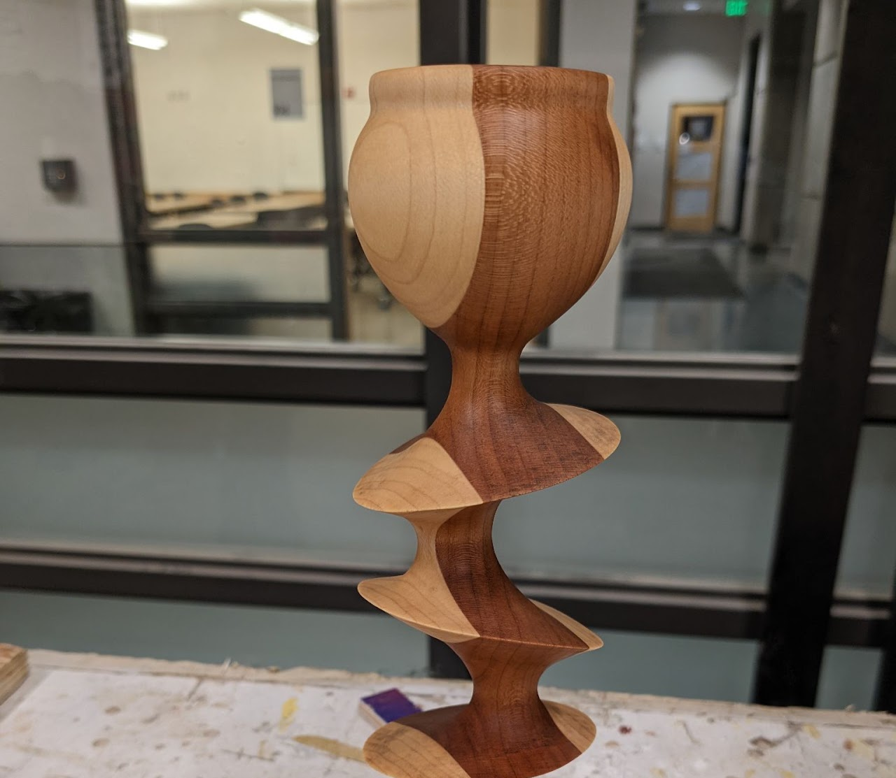

The WOOD SHOP entrance is marked PINK. Inside, tools have their own color-coding system. You'll figure it out.
Access to certain machines is facilitated by BTU “Mischief Makers". Anyone can become a "Mischief Maker" on any machine.
*WOOD SHOP access is separate from general BTU access and REQUIRES AN ORIENTATION.*
**FOR YOUR SAFETY, major equipment including table saw, band saw, belt sander, chop saw, and drill press are powered off between the hours of 10pm and 6am, daily.

Wood Shop Orientations
REGISTRATION IS REQUIRED!
REGISTRATION IS REQUIRED!
LINK ON THE CALENDAR.
The Wood Shop Orientation schedule can be found on the BTU Lab Calendar.
Orientations are run by the BTU Mischief Maker(s) listed on the BTU Mischief Maker page.
WOOD SHOP EQUIPMENT
- Table Saw**
- Band Saw**
- Chop Saw**
- Drill Press**
- Belt Sander**
- Random Orbit Sander
- Palm Router
- Drills/Drivers
- Hand Saws
- Files
- Measuring Tools
- Other hand tools
- Oh, and so, so much more my friends!
- Use of the wood shop requires an orientation from BTU Lab staff.
- Following the orientation, you may use the wood shop under the following conditions:
- Multiple violations of wood shop policy, by one or more individuals, will result in reduced access for everyone including locking out machines or the entire space when staff are not available.
BTU Wood Shop Policies.
**FOR YOUR SAFETY, major equipment including table saw, band saw, belt sander, chop saw, and drill press are powered off between the hours of 10pm and 6am, daily. Tampering with timers is considered a serious safety violation.
Violation of any wood shop policy will result in loss of access to BTU Lab and the wood shop until both orientations are repeated.